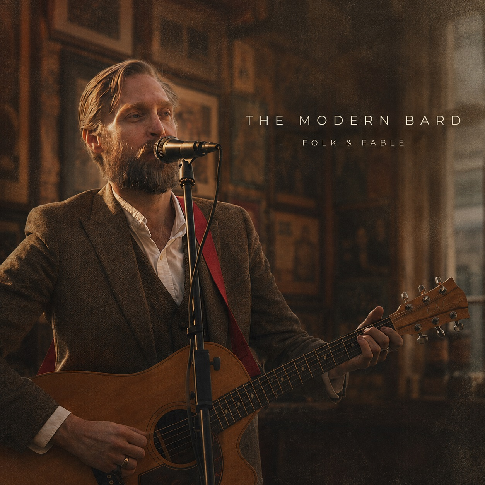

Listen
Folk & Fable brings together selected recordings from The Modern Bard repertoire.

Selected audio
Choose a song below to hear a short excerpt.
Looking for live music for your venue or event?
Bookings & enquiries →Folk & Fable brings together selected recordings from The Modern Bard repertoire.

Choose a song below to hear a short excerpt.
Looking for live music for your venue or event?
Bookings & enquiries →